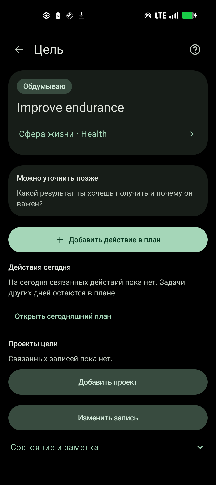
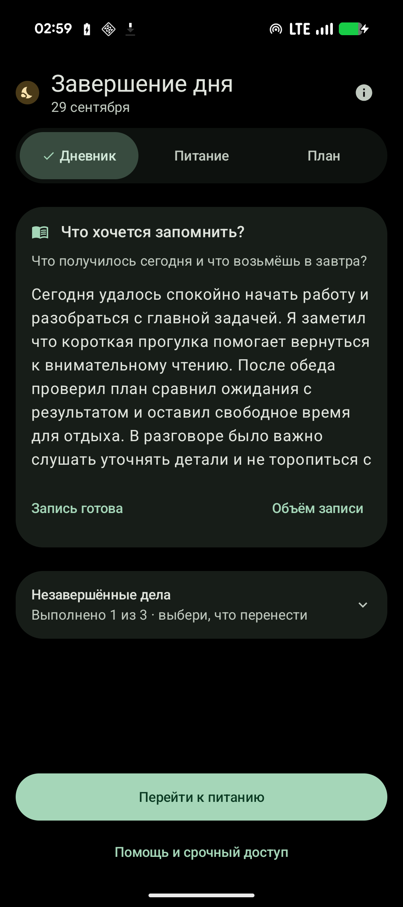
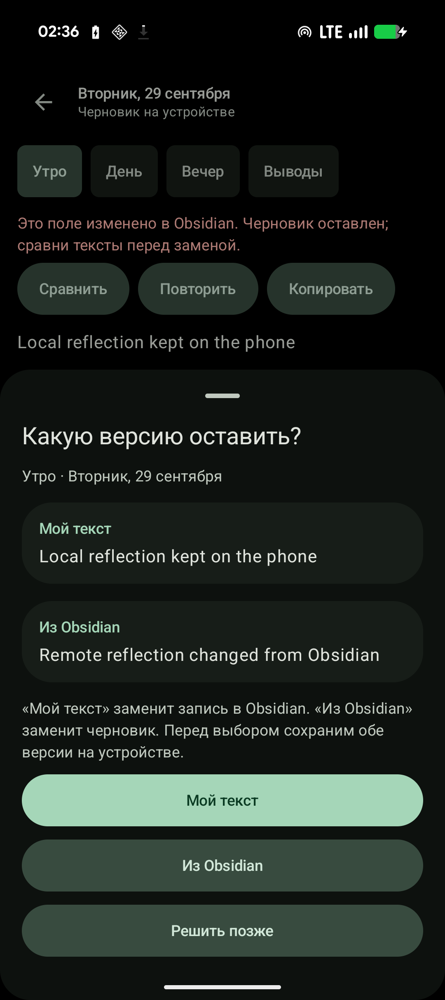

Сферы жизни, цели, проекты и решения связаны с ежедневными задачами и заметками Obsidian. Ниже — реальные снимки новой версии с тестовыми данными на Pixel, а не макеты.



Проверки этих экранов проводились в отдельном временном профиле. Релиз установлен в основной профиль, но финальная визуальная проверка на личных данных ожидает разблокировки телефона. В основном профиле системная шторка и список недавних приложений остаются доступны.